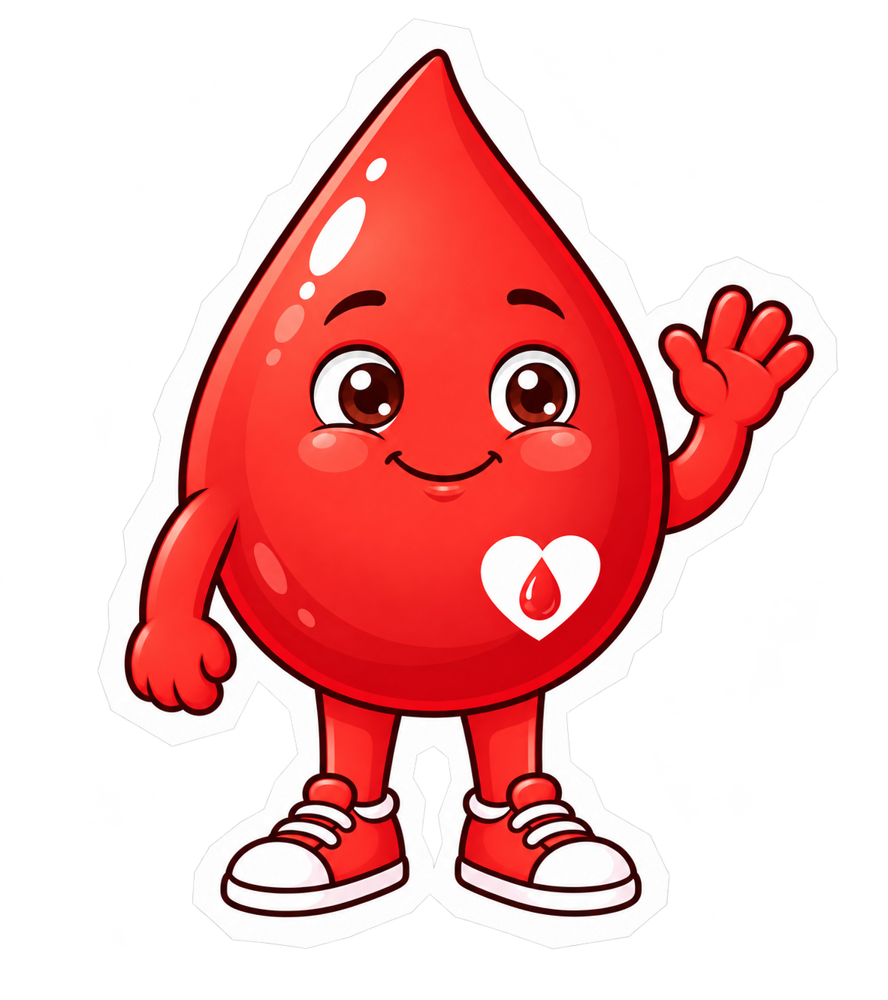
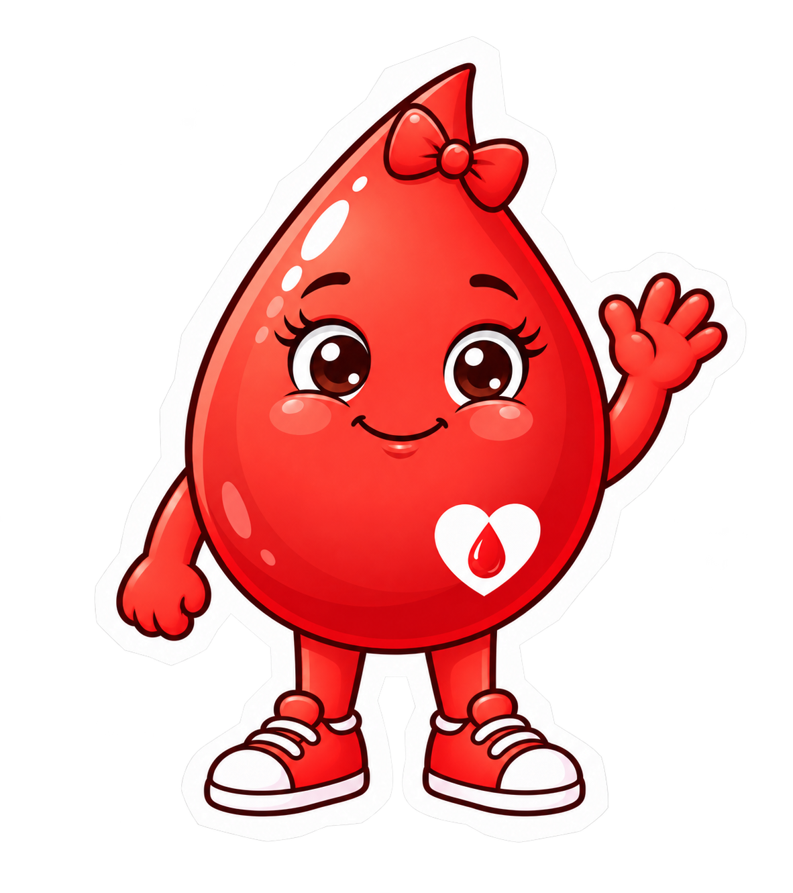

ІГРОВИЙ МІНІГІД
Перша донація
без невідомості.
Попереду — новий досвід.
А поруч — двоє друзів, які допоможуть розібратися.


легше ♥
Долучайся
до розмови.
Герої запитують і допомагають одне одному.
А ти обираєш репліку!
Тепер вирушаймо додому й підготуємося разом.
До другого аркуша →Важливе з інструкції
Щоб розглядати можливість донорства цільної крові, необхідно мати вік від 18 років, масу тіла не менше 50 кг, добре почуватися та не мати протипоказань.
Якщо тобі понад 60 років і це перша донація, рішення про допуск приймає лікар. Після 65 років дозвіл лікаря потрібен під час кожного відвідування.
Якщо маєш хронічне захворювання, приймаєш ліки, нещодавно хворів або хворіла чи маєш сумніви, звернися до фахівців станції до запланованого візиту. Остаточне рішення про можливість донації приймає медичний працівник після обстеження та співбесіди.